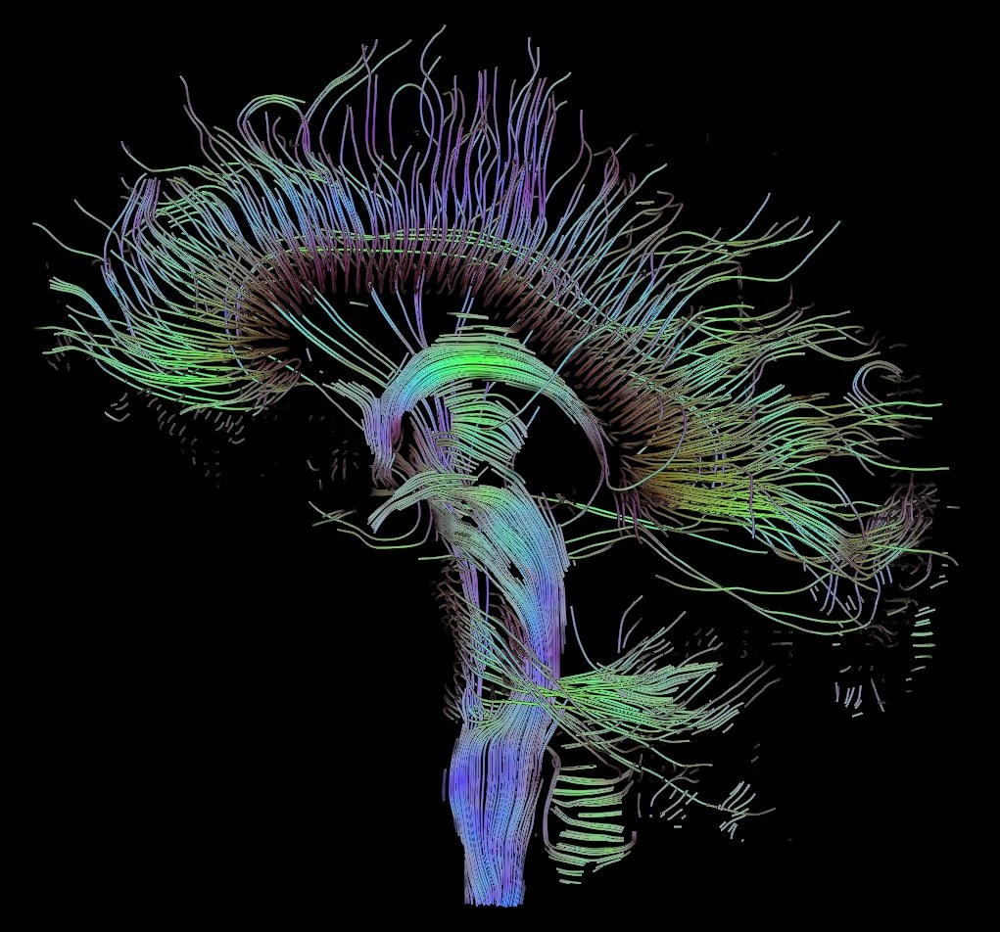

Connettività cerebrale
Marcatori neurodegenerativi per Alzheimer, Parkinson e disturbi dello spettro autistico.
Sviluppiamo modelli computazionali, algoritmi di machine learning e analisi quantitative di sistemi complessi per la diagnosi precoce, la medicina personalizzata e lo studio dei dati genomici, ambientali e neurofisiologici.
Marcatori neurodegenerativi per Alzheimer, Parkinson e disturbi dello spettro autistico.
Rilevazione assistita in TC polmonare e screening senologico multimodale.
Analisi su scala petabyte di dataset clinici e biologici multicentrici.
Il gruppo congiunto Medical Physics and Complex Systems, attivo presso il Dipartimento Interateneo di Fisica dell'Università degli Studi di Bari Aldo Moro e la Sezione INFN di Bari, unisce le competenze della fisica teorica e applicata con l'elaborazione dei big data biomedici.
Dalla segmentazione di noduli polmonari in TC allo studio della connettività cerebrale, fino all'analisi di reti geniche e socio-economiche: ogni linea di ricerca parte da un problema clinico reale e si traduce in strumenti quantitativi, riproducibili e accessibili alla comunità medico-scientifica.
I metodi sviluppati trovano applicazione nella diagnosi assistita da computer (CAD), nella medicina personalizzata e nelle infrastrutture ad alte prestazioni (ReCaS Bari, Cloud INFN) per l'analisi di dataset clinici multicentrici su larga scala.
Scienza dei dati, fisica dei sistemi complessi e strumenti di imaging lavorano su problemi clinici che attraversano la diagnostica, la genomica e la radioprotezione.

Modelli di machine learning e connettività cerebrale (fMRI, DTI, EEG) per la diagnosi precoce di Alzheimer, Parkinson e disturbi dello spettro autistico, con sistemi CAD per la segmentazione di noduli in TC e lo screening senologico.
Scopri la linea →
Teoria dei grafi e fisica statistica applicate a reti di co-espressione genica, dinamiche epidemiologiche e socio-economiche.
Approfondisci →
Imaging a raggi X a contrasto di fase e analisi computazionale su cluster distribuiti (ReCaS, Cloud INFN).
I nostri progetti →
La pipeline sviluppata dal gruppo segmenta automaticamente i noduli, ne stima dimensione e confidenza diagnostica e restituisce l'evidenza al radiologo. Attiva la vista AI per visualizzare l'output del sistema sullo stesso esame.
Modalità: osservazione radiologica dell'esame originale.
Candidate per tesi in Fisica, Informatica e Data Science su: Deep Learning per il neuroimaging, modelli di connettività cerebrale e intelligenza artificiale per l'imaging a raggi X.
Consulta le proposteRecenti lavori sull'applicazione di reti complesse per la diagnosi differenziale e l'analisi di biomarcatori multimodali, pubblicati su riviste di settore.
Esplora le pubblicazioniIl gruppo usa il cluster ReCaS Bari e il Cloud INFN per l'addestramento di modelli di deep learning e l'analisi di dataset clinici multicentrici su larga scala.
Leggi il progettoUn ciclo di lezioni e laboratori dedicato a studenti e ricercatori sulle tecniche di analisi di dati fMRI/DTI ed elaborazione di immagini biomediche.
Consulta il programmaTesi triennali e magistrali, dottorati in Fisica e Applied Physics, assegni di ricerca e posizioni post-doc nei campi della fisica medica e dell'intelligenza artificiale.